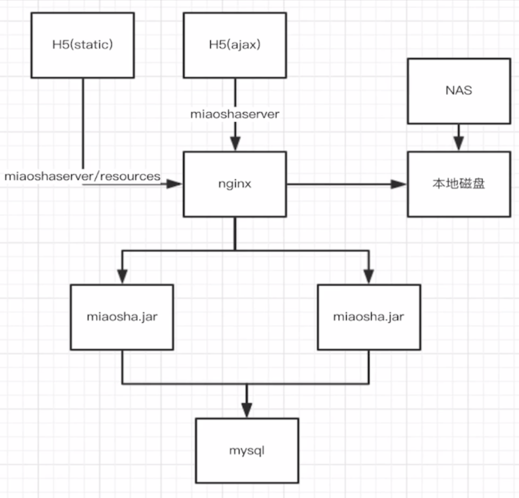
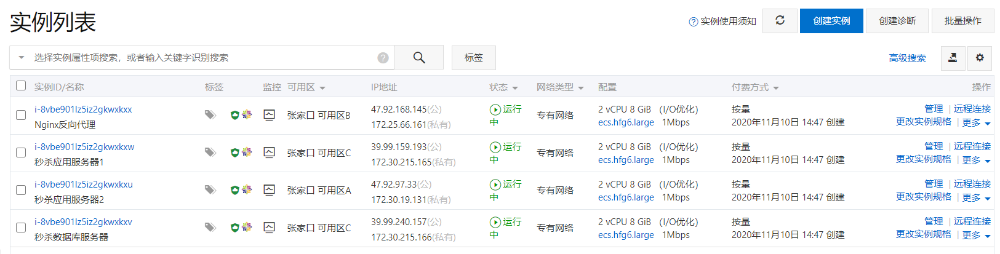
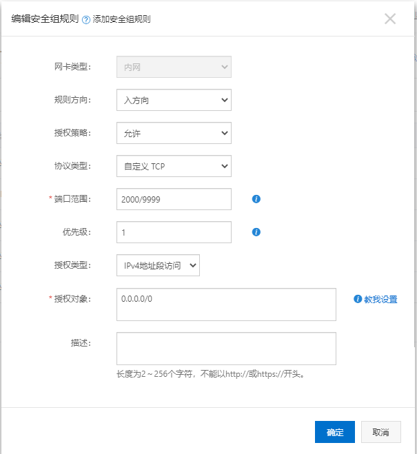

水平扩展
Spring Boot应用部署
之前的压测MySQL与Tomcat在同一台主机上，因此我们需要分布式扩展服务器，引入Nginxx做动静分离和负载均衡，静态请求由Nginx处理（注意企业级应用一般会使用NAS存储），动态请求转发给Tomcat，MySQL单独占用一台主机。其结构图如下：

本实验使用阿里云ECS服务器，如图所示：

修改阿里云安全组，添加开放端口号：

接着配置好各台主机的开发环境。
部署好开发环境后，将项目jar包上传到各台应用服务器上，在application配置文件中配置数据库连接池地址，覆盖我们开发时配置的本机地址：
1 | =jdbc:mysql://172.30.215.166:3306/miaosha?useUnicode=true&characterEncoding=UTF-8 |
使用telnet命令测试能否连接数据库：telnet 172.30.215.166 3306，结果显示连接不被允许：
1 | Trying 172.30.215.166... |
MySQL授权给远端连接
我们需要MySQL授权给应用服务器，切换至MySQL服务器进入MySQL：
grant all privileges on *.* to USERNAME@'%' identified by 'PASSWORD';，只要用户名和密码正确，授权来自任何域名的数据库访问。
flush privileges;：刷新权限。
Nignx反向代理
OpenResty是一个基于 Nginx与 Lua 的高性能 Web 平台，参考OpenResty中文官网。
安装OpenResty
- 安装依赖库：
yum install pcre-devel openssl-devel gcc curl - 下载预编译包：
wget https://openresty.org/download/openresty-1.17.8.2.tar.gz - 解包：
tar -xvzf openresty-1.17.8.2.tar.gz - 编译：
./configure->make - 安装：
make install，默认安装路径为/usr/local/openresty - 启动服务器：
cd /usr/local/openresty/nginx- 指定以nginx.conf配置启动，
sbin/nginx -c conf/nginx.conf - 启动后若修改配置文件，
sbin/nginx -s reload可无缝重启
静态资源部署
将前端相关资源上传到//usr/local/openresty/nginx/html目录下，新建目录resources，将html目录下所有静态资源移动到resources目录下。
修改nginx.conf：
1 | location / { |
动态请求转发
所有的静态页面都由Nnigx处理，例如访问http://nginxserver/resources/templates/register.html；所有的动态请求都转发给Tomcat，例如访问http://nginxserver/item/get?id=1。
设置upstream server
1 | #设置两台应用服务器的地址，轮流访问 |
设置动态请求location为proxy pass路径
1 | location / { |
开启tomcat access log
开启tomcat访问日志记录，修改application配置文件：
1 | =true |
考虑局域网连接的建立与释放的消耗
由于Nginx反向代理服务器默认配置与后端服务器的连接是没有配置keepAlive的，因此大量动态资源请求时，Nginx与Tomcat的连接是短连接，会有大量连接的建立与释放，而Druid管理下应用服务器与数据库服务器之间连接则默认保持长连接。
Nginx配置keepalive：
1 | upstream backend_server { |
Nginx高性能原因
epoll多路复用
master worker进程模型
协程机制
分布式会话管理
我们通过将session保存到Redis服务器来实现分布式会话，有两种实现方式：
- 基于Cookie传输JSESSIONID：Tomcat容器session实现迁移到Redis。
- 基于Token传输类似sessionid：Java代码session实现迁移到Redis。
Windows下安装Redis用于调试程序：
- 下载地址
- 安装完成后切换到安装目录，启动cmd
- 启动Redis服务器：
redis-server.exe redis.windows.conf - 启动客户端：
redis-cli -h 127.0.0.1 -p 6379
Cookie方式
导入依赖：
1
2
3
4
5
6
7
8
9<dependency>
<groupId>org.springframework.boot</groupId>
<artifactId>spring-boot-starter-data-redis</artifactId>
</dependency>
<dependency>
<groupId>org.springframework.session</groupId>
<artifactId>spring-session-data-redis</artifactId>
</dependency>配置application.properties：
1
2
3
4
5
6
7
8
9#配置SpringBoot对Redis的依赖
=127.0.0.1
=6379
#Redis默认16个数据库，指定其中某一个
=10
#spring.redis.password=
#设置Jedis连接池连接数量
=50
=20添加RedisConfig配置类：
1
2
3
4
(maxInactiveIntervalInSeconds = 3600) //设置session失效时间，默认30min，修改为1h
public class RedisConfig {
}Session存储的对象需要实现Serializable接口：
1
2
3
4
5request.getSession().setAttribute("LOGIN_USER", userModel);
public class UserModel implements Serializable {
//......
}本地调试登录功能，查看Redis服务器10号数据库是否有数据。
调试完没有问题后，重新生成jar包上传到应用服务器，然后云端搭建Redis服务器（为节省成本，这里Redis与MySQL使用同一台服务器）：
- yum安装或编译安装均可，yum安装会将相关命令放入/usr/bin，可以直接在任何地方访问，并且配置文件redis.conf在/etc/目录下。
- 修改redis.conf的server地址为服务器的局域网地址，以该配置文件启动：
redis-server /etc/redis.conf & - 修改两台应用服务器的application配置文件，配置spring.redis.host=redis所在服务器地址，启动应用。
Token方式
企业开发中应该使用这种方式，考虑到客户端的多平台特性，某些客户端可能不支持Cookie方式。
UserController的login方法中，原来的方式：
1 | request.getSession().setAttribute("IS_LOGIN",true); |
改为：
1 |
|
1 | //3.修改为使用token的方式，将token和用户模型一起存入redis中 |
前端代码修改：
login.html，登录的ajax请求success回调函数中，若登录成功添加token：
1 | var token = data.data; |
获取商品下单时判断是否持有token：
1 | var token = window.localStorage["token"]; |
下单的Controller验证token：
1 | String token = request.getParameterMap().get("token")[0]; |